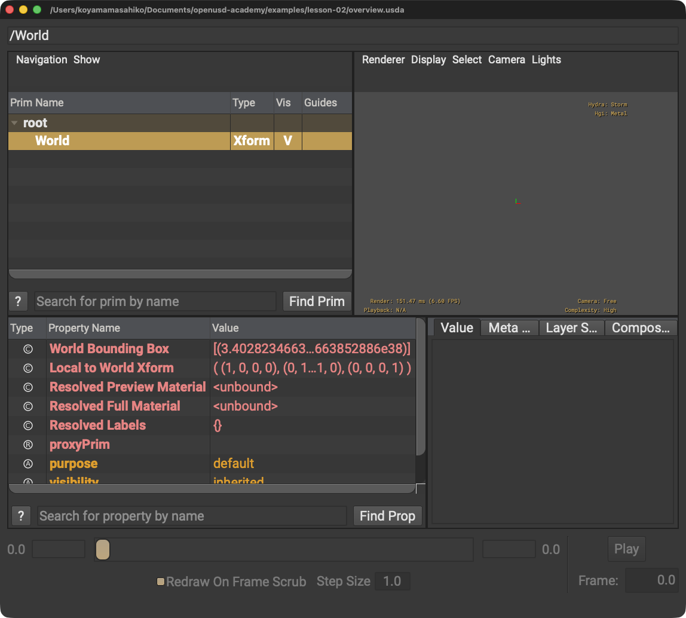

OpenUSDは拡張子だと思う
OpenUSDはフレームワークです。USDA、USDC、USD、USDZはファイル形式です。
STEP 02 · FOUNDATIONS
ファイル形式だけではないOpenUSDの役割を、最小のStageから理解します
今日これだけ
公式情報に基づく説明
NVIDIA Learn OpenUSDは、OpenUSDをPixarが開発した、3Dシーンの記述、合成、シミュレーション、共同作業のためのオープンソースフレームワークと説明しています。非破壊の共同作業、再利用可能な構成要素、アプリケーション間の相互運用が主要な能力です。
Diagram
USDA
#usda 1.0
def Xform "World"
{
}#usda 1.0はUSDAヘッダー、defはPrimの定義、XformはPrim型、"World"は名前です。左波括弧{から右波括弧}までがWorldの内容です。

root → Worldが現れます。WorldはXformなので、それだけでは形状を描画しません。Python
from pxr import Usd
stage = Usd.Stage.CreateNew("overview.usda")
stage.DefinePrim("/World", "Xform")
stage.Save()fromとimportはpxrパッケージからUsdモジュールを読み込む語です。丸括弧()は関数へ渡す値を囲み、カンマ,はPathと型を分けます。ピリオド.は左側に属する機能へ進む区切り、=は右側のStageを左側の名前へ割り当てます。
USDA → Python mapping
USDA
#usda 1.0↓Python
Usd.Stage.CreateNew("overview.usda")USDAファイルをルートLayerとする新しいStageを作ります。
USDA
def Xform "World"↓Python
stage.DefinePrim("/World", "Xform")同じ名前と型のPrimを同じPathへ定義します。
Beginner notes
よくある間違い
OpenUSDはフレームワークです。USDA、USDC、USD、USDZはファイル形式です。
Stageは複数のLayerから構成されることがあります。
Glossary
Official references
確認日: